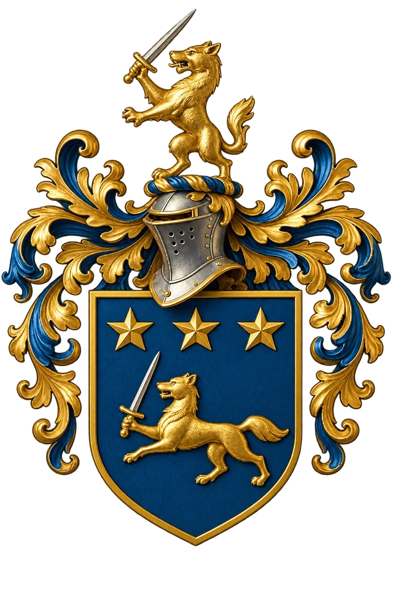

Palvetajaritsika stiil
Viis väravat.
Mis see on?
Palvetajaritsika võitluskunst (螳螂拳 tángláng quán) on Põhja-Hiinast pärit kungfu stiil. Nimi tuleb putukast: palvetajaritsikas ootab liikumatult, haagib saagi kahe eesjalaga kinni ja lööb kohe. Täpselt nii töötab ka kunst: käed haagivad, keha tuleb järele, löök on lühike ja terav.
Meister Wulfi õppekavas on väljaõpe jagatud viieks väravaks. Väravat võib mõista kui taset. Iga värav annab ühe uue oskuse ja lõpeb testiga: sa näitad, et valdad seda konkreetset teemat ja lähed edasi. Kõik käib lihtsalt keerulisemale: enne keha, siis käed, siis jõud, siis kogu keha, siis tervik.
Kolm asja, mida sa igal astmel õpid:
- Keha. Asendid, samm, hingamine, jõud. Kuidas keha töötab ja kuidas ta terveks jääb.
- Käed ja partner. Vormid (liigutuste jadad) ja nende kasutamine partneri vastu.
- Pea. Mida teha ja mida mitte teha. Reeglid, mis kehtivad alati.
Värav 1. Keha püsti (立身 lìshēn)
Mõte. Enne kui lööd, seisa. Jõud läheb läbi keha ainult siis, kui keha on paigas.
Mida õpid
- Kaheksa võitluse asendit, mida nimetatakse poosideks (桩 zhuāng): ratsaseis, mäkketõus, neelav seis, toetav seis, tiigripoos ja teised. Seisad, hingad, partner surub, sa ei liigu.
- Kolm reeglit, mis kehtivad edaspidi igas liigutuses: pea püsti, õlad all, põlv varba kohal.
- Esimene vorm: Zhilu, “teenäitaja”. Lühike jada, milles on kõik põhiliigutused.
- Löök padjale nii, et jõud tuleb jalast, mitte õlast.
Test. Kaheksa seisu järjest, igas seisus partner surub. Vorm tervikuna. Sa tead oma keha: miks põlv peab olema varba kohal ja miks õlg ei tohi kerkida.
Omandamiseks kuluv aeg. Umbes 6 kuni 12 kuud.
Värav 2. Käed selged (明手 míngshǒu)
Mõte. Käsi teab, mida see teeb. Kontakt partneriga ei katke.
Mida õpid
- Kaksteist märki, mida käsi saab kontaktis teha: 黏 nián (külge jääma), 粘 zhān (kleepuma), 绑 bǎng (siduma), 贴 tiē (liibuma), 提 tí (tõstma), 拿 ná (haarama), 封 fēng (sulgema), 闭 bì (kinni panema), 来 lái (tulema), 就 jiù (vastu minema), 顺 shùn (järgima), 送 sòng (minema saatma). Iga märk on üks asi, mida sa partneri käega teed; neli viimast on üks taktika: vastane tuleb, sa lähed liikumisega kaasa, järgid seda ja saadad ta minema.
- Kaks vormi: Xiao Fanche (“väike pöörlev vanker”) ja Meihualu (“ploomiõie tee”).
- Paaristöö: käed on kogu aeg kontaktis, kumbki otsib hetke. Lööke kehale ei tehta.
- Esimene qinna (擒拿 qínná, haaramine ja kontroll): ranne ja küünarnukk. Sa õpid, kuidas liiges lukustub ja kuidas sellest vabaneda.
Test. Kaksteist märki partneri vastu, partner ütleb märgi ette. Kaks vormi. Randme ja küünarnuki võtted mõlemale poolele, aeglaselt ja ohutult.
Omandamiseks kuluv aeg. Umbes aasta kuni poolteist.
Värav 3. Jõu mõistmine (懂劲 dǒngjìn)
Mõte. Jõud ei ole ramm. Jõud on see, mis algab jalast ja jõuab sõrmedesse. Sa tunnetad partneri jõudu enne, kui see kohale jõuab.
Mida õpid
- Prahvatav löök (崩捶 bēngchuí): lühike, terav, tuleb pingest ja tõmbub ise tagasi.
- Kõva ja pehme: kõva enne partneri jõudu, pehme pärast seda. Mitte kunagi ei lähe sa vastu vastase jõu rakendamise tipphetke.
- Kaks vormi: Lanjie (“tõkesta ja katkesta”) ja Bengbu (“prahvatav samm”).
- Esimene sparring. Kaitsevarustusega, keha ja käed, pea ei ole sihtmärk.
- Pea ja kael: sa õpid neist haaretest vabanema.
Test. Kaks vormi. Jõutest löögipadjale: kümme lööki, viimane sama tugev kui esimene. Silmad kinni: partner surub, sa ütled, kust ja kui tugevalt. Kaks ringi sparringut nii, et sa ei ole kange, lõtv, hõljuv ega segaduses.
Aeg. Umbes poolteist kuni kaks aastat.
Värav 4. Kogu keha relvaks (分身 fēnshēn)
Mõte. Kui käed on seotud, jätkab küünarnukk. Kui küünarnukk on seotud, jätkab õlg, puus või põlv.
Mida õpid
- Kaheksa lühikest relva: pea, õlg, küünarnukk, külg, puus, põlv ja teised. Löögid padja pihta ja kaitstud partneri vastu.
- Vorm Bazhou (分身八肘, “keha kaheksa lühimaa löögivahendit”), neli osa. Nimi ei tähenda sõna-sõnalt kaheksat küünarnukki: see tähistab eri kehaosade kasutamist lühimaa löögivahendina, kui tavalised käetehnikad on takistatud.
- Heited ja kukkumine. Enne heiteid õpid kukkuma: neli kukkumist, pea ei puuduta matti.
- Qinna: sõrmed ja puus. Sõrmelukk kontrollini, mitte valuni.
- Seadus. Eesti hädakaitse reegel ühe lausega: sa tohid ennast või teist kaitsta, aga vahend peab vastama ohule.
- Esimene tund, mille sa ise annad: 15 minutit algajatele.
Test. Bazhou tervikuna. Heide ja kukkumine mõlemale poolele. Sparring, milles kolmas inimene tuleb selja tagant ja sa märkad teda enne kontakti. Oma tund.
Aeg. Umbes kaks aastat.
Värav 5. Essents (摘要 zhāiyào)
Mõte. Kõigest eelnevast tehakse väljavõte. Üks põhimõte, mis töötab igas kujus.
Mida õpid
- Vorm Zhaiyao. Selles on kõigi varasemate vormide parimad osad ühes vormis.
- Relvad: lühike kepp, mõõk, pikk kepp, oda. Relv on vaid käe pikendus: jõud kogutakse ikka jalast (puusadest) ja suunatakse löögiteravikuni (rusikas, mõõgaots jne).
- Viimased qinna moodulid: põlv ja jalg. Teadmine, kus kehal on ohtlikud kohad, et neid mitte lüüa ja et osata aidata kannatanut, kui keegi on teda löönud.
- Vabavõitlus mitme partneriga. Alati on üks lubatud lahendus: põgene:)
- Õpetamine. Sa annad terveid treeningtunde ja aitad hinnata.
Test. Zhaiyao ja kaks relvavormi. Vaba töö. Terve tund, mille sa ise annad. Sa tead, kelle käest sa õppisid ja oskad seda öelda.
Aeg. Ülemist piiri ei ole.
Viis väravat ühe pilguga
| Nr | Nimi | Uus oskus | Vormid | Qinna |
|---|
| 1 | Keha asendid | seis ja juur | Zhilu | oma keha |
| 2 | Käed selged | kontakt | Xiao Fanche, Meihualu | ranne, küünarnukk |
| 3 | Jõu mõistmine | jõud ja hetk | Lanjie, Bengbu | vabanemised (pea, õlg) |
| 4 | Kogu keha relvaks | lühikesed relvad, heide | Bazhou (neli osa) | sõrmed, puus |
| 5 | Essents | tervik, relvad, õpetamine | Zhaiyao, relvad | põlv, jalg |
Kuidas tund käib
- Soojendus ja asend. Liikuvus, siis seisud. Iga tund algab asenditest, ka viiendas väravas.
- Vorm. Oma värava vorm, tervikuna või motiivide kaupa. Vorm on mälu: iga liigutus tähendab midagi partneri vastu.
- Paaristöö. Vormi liigutus partneri vastu, siis partner muudab midagi, sa valid mõjutuse.
- Padi või matt. Löögid padjale, kukkumised, heited.
- Lõpp. Rahulik hingamine. Kolm aeglast sammu.
Reeglid, mis kehtivad alati
- Kaks lööki vastu keha tähendab: lase lahti. Kohe. Alati.
- Pea, kael, selgroog, kägistus, kube: neid võtteid ei tehta. Neid tuntakse, et neist vabaneda ja et mitte teisi vigastada.
- Liigesevõte tehakse aeglaselt kuni kontrollini, mitte valuni. Küünarnukk ja põlv ei hoiata valuga: seal ainult tunnetuseni.
- Sparringus on kaitsevarustus. Pea ei ole sihtmärk enne viimast väravat.
- Vigastust ei varjata. Peavalu, uimasus või tuimus pärast tabamust: trenn lõpeb ja sa ütled õpetajale.
- Trennis harjutame tervise pärast, mitte tüli pärast. Väljaspool treeningsaali on esimene lahendus lahkumine.
- Julgus tähendab astuda välja teise inimese eest, mitte ennast tõestada.
- Treeningus õpi esmalt edasi antud versioon täpselt selgeks ja hoia selle ülesehitust. Ajalooliselt on palvetajaritsika vormid eri õpetajate, perekondade ja piirkondade vahel erinevalt kujunenud.
Sõnad, mida trennis kuuled
| Hiina | Hääldus | Tähendus |
|---|
| 螳螂 | tángláng | palvetajaritsikas |
| 关 | guān | värav, aste |
| 桩 | zhuāng | post, seis |
| 劲 | jìn | jõud (mitte ramm) |
| 崩 | bēng | prahvatav |
| 擒拿 | qínná | haaramine ja kontroll |
| 拆 | chāi | lahtivõtmine: vormi liigutus partneri vastu |
| 靠 | kào | kehasurve, õlaga või puusaga |
| 刚 / 柔 | gāng / róu | kõva / pehme |
| 虚 / 实 | xū / shí | tühi / täis |
| 师父 | shīfu | õpetaja |
Kust see stiil tuleb
Kunst on pärit Shandongi provintsist Laiyangi kandist; Taiji Meihua palvetajaritsikal on umbes kolme-neljasaja aasta pikkune ajalugu. Meie liin on Weifangi Taiji Meihua palvetajaritsikas. Eestisse jõudis see 1991. aastal ja meie kool on selle jätk. Mõnest vormist, näiteks Bengbust ja Lanjiest, on nii Meihua kui ka Taiji versioon; meister Wang Xiuyuani soovitusel omandatakse esmalt Meihua materjal ja seejärel Taiji oma. Kes tahab liini, nimesid ja allikaid täpselt teada, leiab need raamatust “Palvetajaritsika kaanon” (küsi Meister Wulfilt). Trennis pole seda vaja: seal on vaja seista, vaadata ja proovida.
Kuidas alustada
Tule tundi. Treeningud toimuvad Veskimöldres (Laagri lähedal, Tallinn).
Esimesed kuud on asendid, sammud ja üks vorm. See on igav täpselt nii kaua, kuni partner sind esimest korda lükkab ja sa ei liigu.
Tallinn, 2026
Võta ühendust